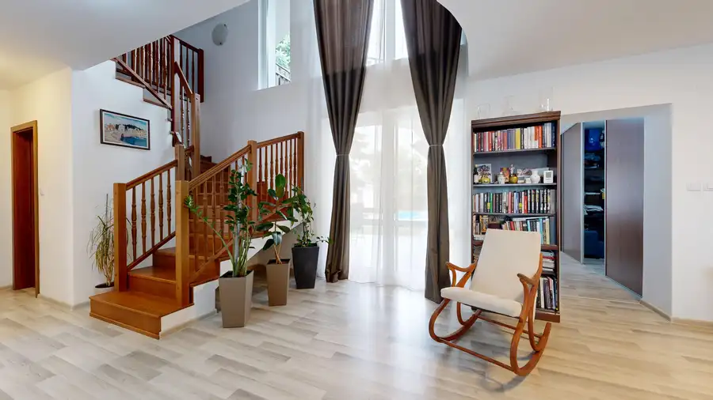
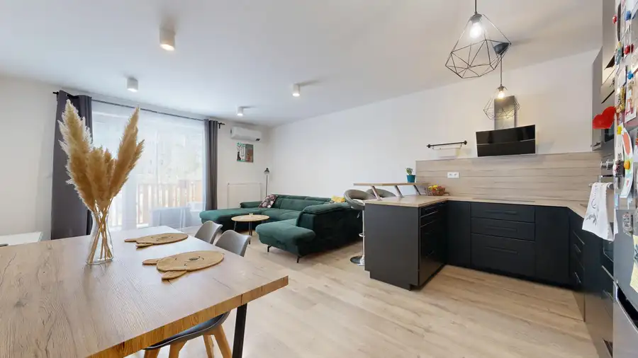
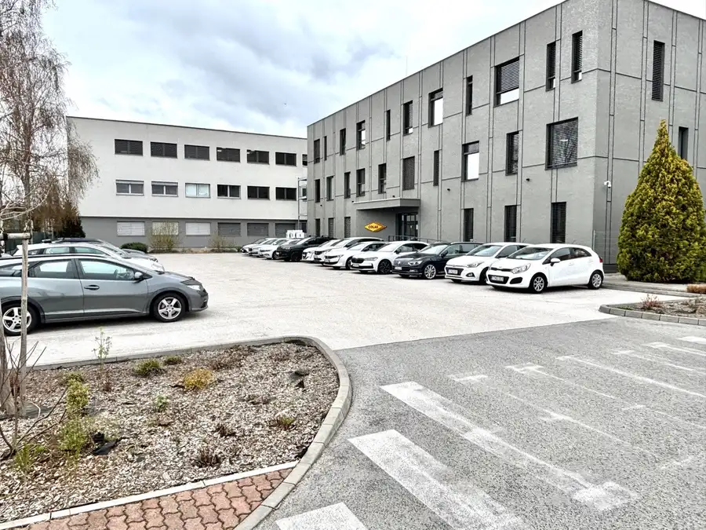
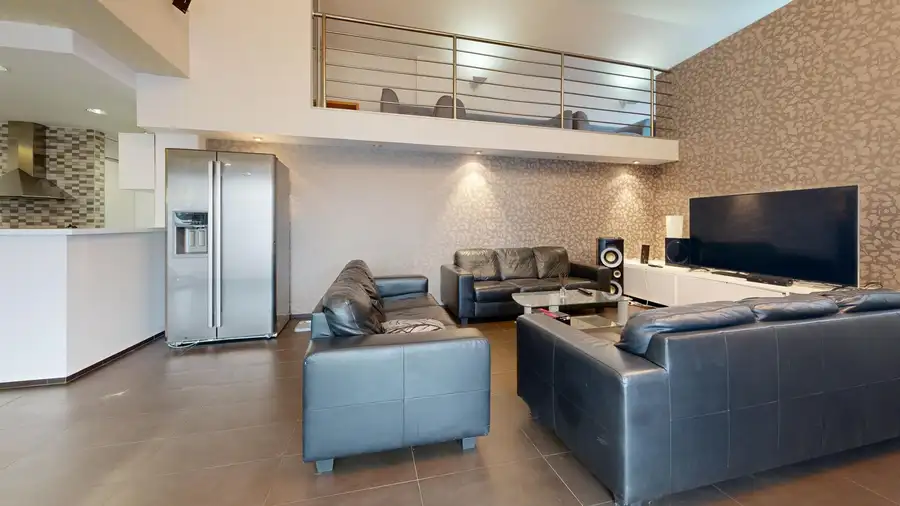
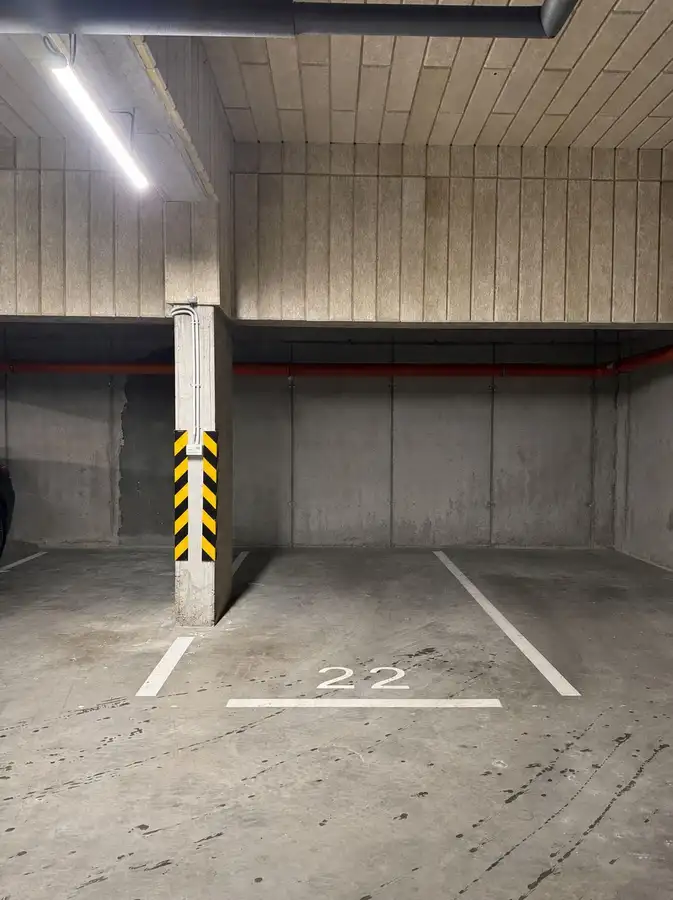
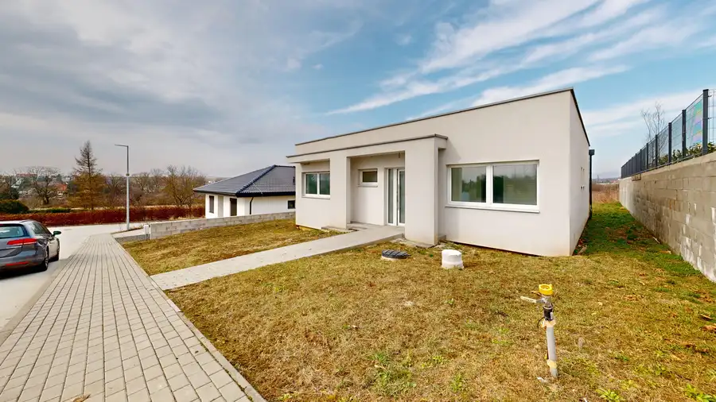
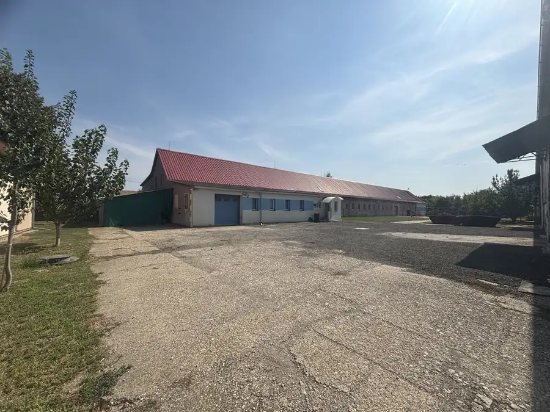
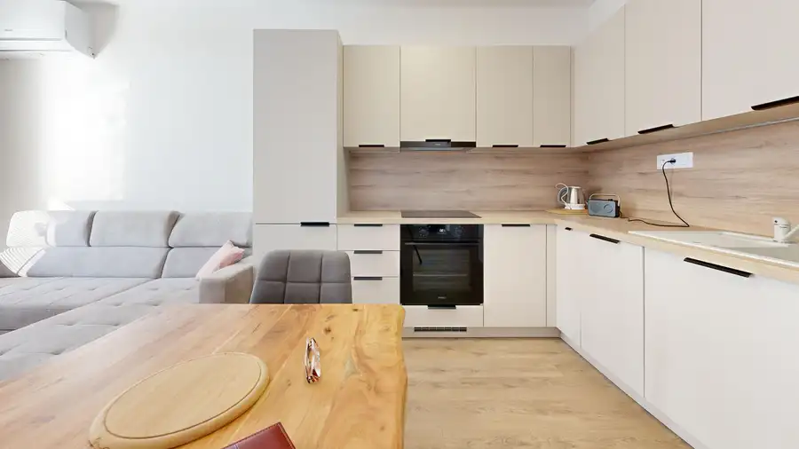

Aktuálna ponuka
Nehnuteľnosti, ktoré ponúkam
12 nehnuteľností na predaj a prenájom. Vyberte typ, alebo napíšte lokalitu.
12 z 12 ponúk
 Komerčné priestoryNové10
2 000 €Na prenájom! výrobná hala s veľkým pozemkom - Cífer
Cífer
1100 m²
CASMAR RK, vo výhradnom zastúpení klienta, ponúka na prenájom výrobnú a skladovú halu nachádzajúcu sa na veľkom pozemku v obci Cífer.Aktuálne…
Komerčné priestoryNové10
2 000 €Na prenájom! výrobná hala s veľkým pozemkom - Cífer
Cífer
1100 m²
CASMAR RK, vo výhradnom zastúpení klienta, ponúka na prenájom výrobnú a skladovú halu nachádzajúcu sa na veľkom pozemku v obci Cífer.Aktuálne…
 PozemokNové4
108 500 €Na predaj!!! stavebný pozemok s projektovou dokumentáciou
Cífer
485 m²
RK CASMAR, vo výhradnom zastúpení klienta, ponúka na predaj stavebný pozemok s výmerou 485m2 a vypracovanou projektovou dokumentáciou rodinného domu…
PozemokNové4
108 500 €Na predaj!!! stavebný pozemok s projektovou dokumentáciou
Cífer
485 m²
RK CASMAR, vo výhradnom zastúpení klienta, ponúka na predaj stavebný pozemok s výmerou 485m2 a vypracovanou projektovou dokumentáciou rodinného domu…
 Komerčné priestory10
3 000 €NA PREDAJ priestor v centre Trnavy – Halenárska ulica
Trnava
145.4 m²
CASMAR RK, vo výhradnom zastúpení klienta, ponúka na predaj: Klimatizovaný nebytový priestor s možnosťou preklasifikovania na byt v centre mesta…
Komerčné priestory10
3 000 €NA PREDAJ priestor v centre Trnavy – Halenárska ulica
Trnava
145.4 m²
CASMAR RK, vo výhradnom zastúpení klienta, ponúka na predaj: Klimatizovaný nebytový priestor s možnosťou preklasifikovania na byt v centre mesta…

Dom10 510 000 €NA PREDAJ | Priestranný viacizbový rodinný dom s bazénom Ružindol 255 m² CASMAR realitná kancelárie ponúka exkluzívne na predaj nadštandardný dvojpodlažný rodinný dom, ktorý spája veľkorysý priestor, súkromie a komfortné…
Byt10 239 000 €Na predaj moderný 3-izbový byt v novostavbe miko Trnava 3-izbový76 m²2. podlažie RK CASMAR, vo výhradnom zastúpení klienta, ponúka na predaj moderný 3-izbový byt v obľúbenej novostavbe MIKO na Mikovíniho ulici v Trnave.Byt s…
Komerčné priestoryNové10 Cena dohodouNa prenájom – reprezentatívne kancelárske priestory Trnava 374 m² CASMAR RK, vo výhradnom zastúpení klienta, ponúka na prenájom klimatizované administratívne priestory s celkovou výmerou približne 400 m² vrátane…
Dom10 Cena dohodouNa predaj! veľký rodinný dom Senica Senica 221 m² CASMAR RK, vo výhradnom zastúpení klienta, ponúka na predaj priestranný rodinný dom s garážou v centre okresného mesta Senica.Dvojpodlažný rodinný…
Komerčné priestory2 Cena dohodouNa predaj: Garážové parkovacie státie v novostavbe MIKO. Trnava 12 m² CASMAR RK ponúka na predaj garážové parkovacie státie v modernej novostavbe MIKO na Mikovíniho ulici v Trnave.Parkovacie státie sa nachádza v…
Dom10 Cena dohodouModerné bývanie v pokojnej lokalite s výbornou dostupnosťou Zvončín 127.5 m² 🌟 Novostavba 4-izbového rodinného domu – ZvončínCASMAR RK ponúka na predaj priestrannú, moderne riešenú novostavbu rodinného domu v pokojnej a…
Komerčné priestory10 Cena dohodouNa predaj! zabehnutá strojárenská firma so zariadením Cífer 1226 m² CASMAR RK, vo výhradnom zastúpení klienta, ponúka na predaj zabehnutú strojárenskú firmu nachádzajúcu sa v obci Cífer.Zariadená výrobná hala so…
Byt10 Cena dohodou🏡 Na prenájom – nový 2-izbový byt v novostavbe PRÚDY Trnava Trnava 2-izbový46.05 m²3. podlažie CASMAR RK, vo výhradnom zastúpení klienta, ponúka na prenájom 2-izbový byt v obľúbenej novostavbe PRÚDY na Včelárskej ulici v Trnave.Byt má… Byt
Cena dohodouNa prenájom 3-izbový zariadený byt saleziánska ulica, Trnava
Trnava
3-izbový84.79 m²2. podlažie
CASMAR RK ponúka na prenájom priestranný a kompletne zariadený 3-izbový byt nachádzajúci sa na Saleziánskej ulici v Trnave, situovaný na 2. poschodí…
Byt
Cena dohodouNa prenájom 3-izbový zariadený byt saleziánska ulica, Trnava
Trnava
3-izbový84.79 m²2. podlažie
CASMAR RK ponúka na prenájom priestranný a kompletne zariadený 3-izbový byt nachádzajúci sa na Saleziánskej ulici v Trnave, situovaný na 2. poschodí…
Tomuto výberu zatiaľ nezodpovedá žiadna ponuka. Napíšte mi, čo hľadáte.